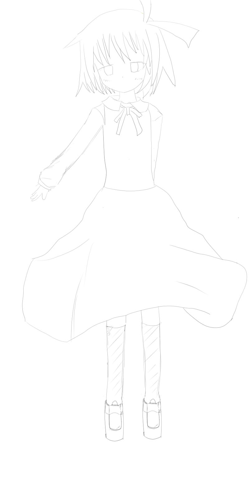
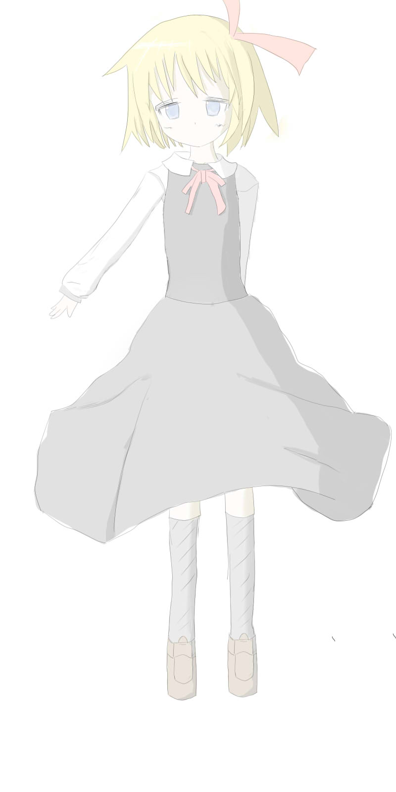
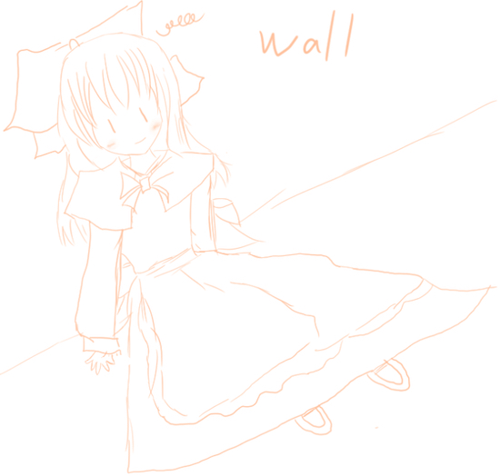
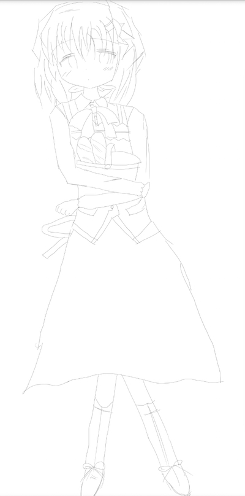
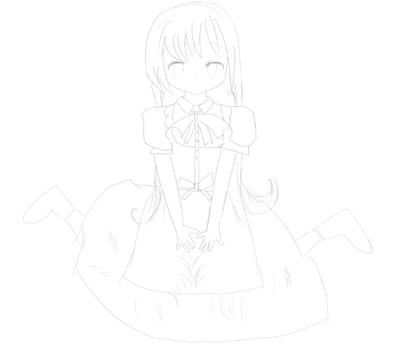
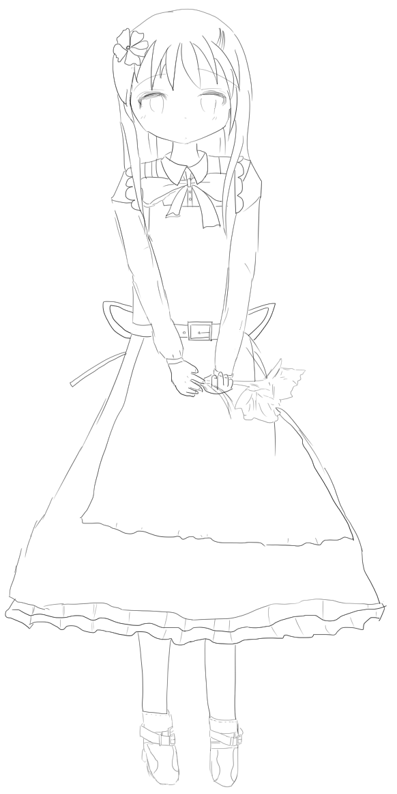

ソフトはClip Studio PaintやPaint Tool SAIを使っています。

ルーミアです。ちょっと線画が細すぎ（薄すぎ）たかもしれません。

色と影をつけてみました。ちょっと不自然な感じなところもありますが、とりあえず色はつけておきました。

オレンジ色で上海人形を描いてみました。短時間で描きました。

ココアです。骨格がおかしい感じがしますね…

ポニーテールの女の子を描いてみました。足のあたりが雑です。

色と影をつけてみました．色ぬりは難しいですね…

長髪の女の子を描いてみました。ちなみに持っている花はクリスマスローズ（のつもり...）です。